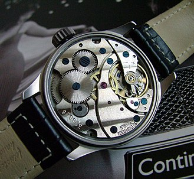
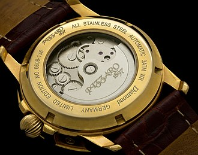
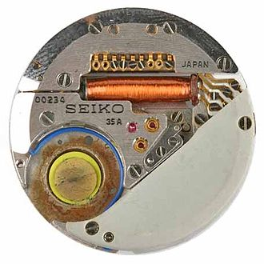

Seiko Quartz-Astron 35SQ

Seiko is a Japanese watch company known for the movement or technology hidden deep within their watches. Today the company is most known for its complicated mechanical and automatic watch movements, and the artistic design of their watch dials. However, historically Seiko is known for producing the first ever wrist watch implemented with a quartz movement which changed and revolutionized the watch industry.
 
To explain the impact of the technology Seiko developed, knowing the technology before quartz is essential. Mechanical watch movements involved many moving parts. The crown of the watch had to be wound which gave a small spring in the watch limited amounts of stored energy which was transferred to several gears inside the watch and those gears would make the hands of the watch move, telling the time. Automatic watch movements worked in the same fashion, but instead of winding a crown manually, the watch had a rotor inside the watch. The rotor would move along with the momentum of the wearer’s arm, which would make the rotor spin on a pivot connected to the spring of the watch which powered the mechanisms. The downside of these movements is that the watch had to be powered up every morning as it lost power during the night, and due to many possibilities of error in the movement, these watches were not very accurate in telling the time. These watches also had to be handmade out of precious gems and metals by expert watch makers to produce a good quality movement.
Quartz movements rely on a battery-powered oscillator which sends electric signals to a tiny piece of quartz making the latter vibrate at a rate of 32,768 hertz or 2^15 hertz. An electric circuit then measures the 32,768 Hz and translates that vibration into one electric signal which powers a motor to move the hands of the clock. Since the electric circuits translates 32,768 cycles a second into one signal, the seconds hand of the watch moves once every second. This entire process makes the watch tell time very accurately and reliably due to the specific cycles of the watch. Being made out of electric circuits, and quartz, which is the second most abundant mineral on the planet, quartz movements can be mass produced in factories, unlike mechanical and automatic watches which required the hand craft of, usually of Swiss descent, watch makers, and several precious metals and gems composing the movement.
Quartz movements, descending from the technology of the Seiko Astron, dominated the watch market for being easily produced, reliable, and accurate. Many Japanese watch brands, like Casio and Citizen, soon followed suit with Seiko, mass producing quartz watches and exporting them world-wide. This destroyed the Swiss watch industry known for their mechanical and automatic movements. Less and less people were buying mechanical and automatic watches as practical tools due to their costliness and fragility, and were instead buying more inexpensive quartz watches. Due to this, hundreds of professional watch makers lost their jobs, and mechanical and automatic watches today are mostly seen as pieces of jewelry instead of tools.